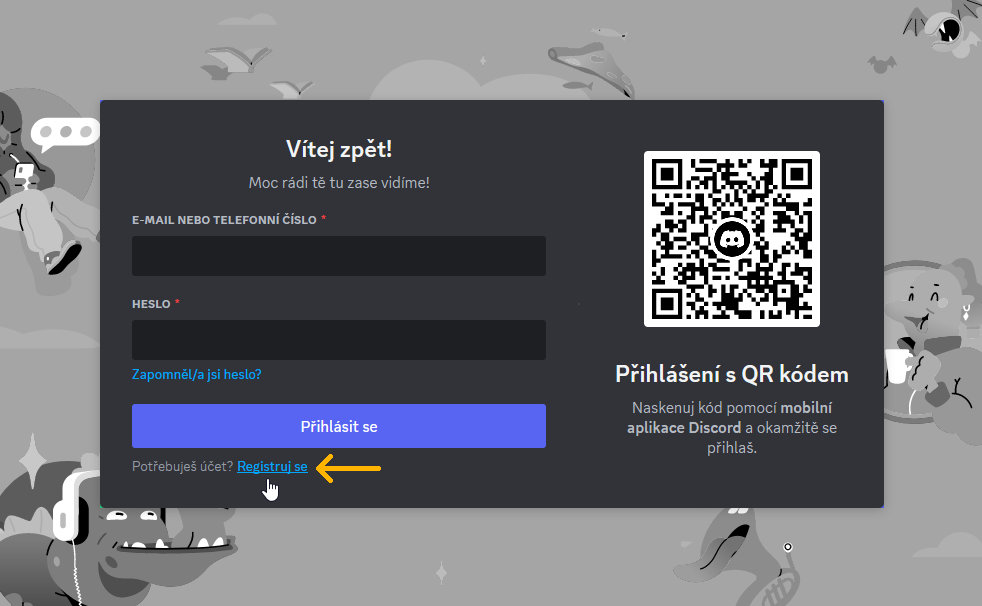
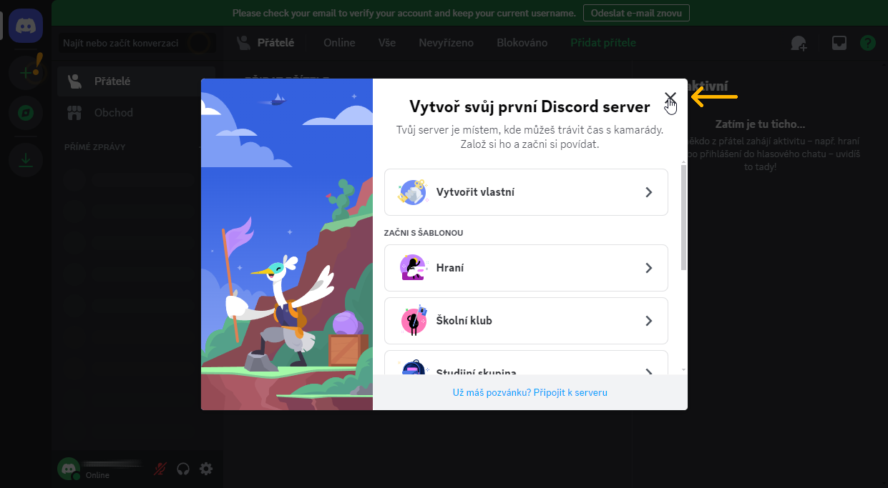

Založení uživatelského účtu na platformě Discord
Tato sekce popisuje, jak si založit uživatelský účet na platformě Discord. Tento postup je proveden ve webové aplikaci.
Jak se dostat k platformě Discord?
Discord je dostupný buď ve webové aplikaci na https://discord.com/app, nebo jako program pro operační systémy Windows, Linux, MacOS, Android a iOS. Podrobnější informace o podporovaných systémech se nacházejí na webu Discordu v sekci FAQ.
1. Přejděte na https://discord.com/app a klikněte na Registruj se.

2. Vyplňte požadované údaje a klikněte na Pokračovat.

3. Abyste mohli váš účet plnohodnotně používat, musíte ověřit svou e-mailovou adresu. Klikněte na tlačítko Verify Email v e-mailu, který přišel na vaši adresu.

4. Váš Discord účet je založen. Zavřete kartu prohlížeče oznamující úspěšné potvrzení e-mailu a vraťte se do karty, kde se prováděla registrace.
5. Zde zavřete uvítací okno a případně odklikejte nápovědu v podobě žlutých vykřičníků.

6. Nyní jste připraveni na používání platformy Discord.